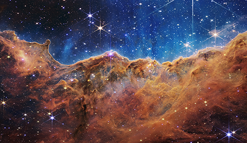

Cosmic Cliffs
About This Image
Caption
What looks much like craggy mountains on a moonlit evening is actually the edge of a nearby, young, star-forming region NGC 3324 in the Carina Nebula. Captured in infrared light by the Near-Infrared Camera (NIRCam) on NASA’s James Webb Space Telescope, this image reveals previously obscured areas of star birth.
Called the Cosmic Cliffs, the region is actually the edge of a gigantic, gaseous cavity within NGC 3324, roughly 7,600 light-years away. The cavernous area has been carved from the nebula by the intense ultraviolet radiation and stellar winds from extremely massive, hot, young stars located in the center of the bubble, above the area shown in this image. The high-energy radiation from these stars is sculpting the nebula’s wall by slowly eroding it away.
NIRCam – with its crisp resolution and unparalleled sensitivity – unveils hundreds of previously hidden stars, and even numerous background galaxies. Several prominent features in this image are described below.
- The “steam” that appears to rise from the celestial “mountains” is actually hot, ionized gas and hot dust streaming away from the nebula due to intense, ultraviolet radiation.
- Dramatic pillars rise above the glowing wall of gas, resisting the blistering ultraviolet radiation from the young stars.
- Bubbles and cavities are being blown by the intense radiation and stellar winds of newborn stars.
- Protostellar jets and outflows, which appear in gold, shoot from dust-enshrouded, nascent stars.
- A “blow-out” erupts at the top-center of the ridge, spewing gas and dust into the interstellar medium.
- An unusual “arch” appears, looking like a bent-over cylinder.
This period of very early star formation is difficult to capture because, for an individual star, it lasts only about 50,000 to 100,000 years – but Webb’s extreme sensitivity and exquisite spatial resolution have chronicled this rare event.
Located roughly 7,600 light-years away, NGC 3324 was first catalogued by James Dunlop in 1826. Visible from the Southern Hemisphere, it is located at the northwest corner of the Carina Nebula (NGC 3372), which resides in the constellation Carina. The Carina Nebula is home to the Keyhole Nebula and the active, unstable supergiant star called Eta Carinae.
NIRCam was built by a team at the University of Arizona and Lockheed Martin’s Advanced Technology Center.
For a full array of Webb’s first images and spectra, including downloadable files, please visit: https://webbtelescope.org/news/first-images/
Credits
IMAGE: NASA, ESA, CSA, STScI
Link to Content Use Policy:
https://webbtelescope.org/copyright
Release Date
July 12, 2022 11:22AM (EDT)